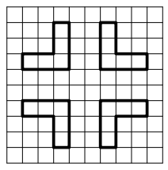

定义 "L 形" 是两个互相垂直的 $1 \times n$ 的长方形，共用一个角上的 $1 \times 1$ 的小正方形所构成的。容易发现 "L 形" 是一种六边形，如下图所示 ($n = 3$)：
现在有一张无限大的方格表，你需要将若干个 "L 形" 放入方格表中，使得每个 "L 形" 完整地覆盖方格表中的 $2 n - 1$ 个方格，且任意两个 "L 形" 不相交 (即同一个方格至多被覆盖一次)。并且你需要保证存在一条连接 $\left( 0, 0 \right)$ 和 $\left( a, b \right)$ 的 $4-$连通路径，使得路径上的每个点都被某个 "L 形" 所覆盖。
你需要最小化所使用的 "L 形" 的数量。
第一行包含一个正整数 $T$ ($T \leq 100$)，表示数据组数。
对于每组数据，共一行包含三个整数 $a, b, n$ ($-10^8 \leq a, b \leq 10^8; 2 \leq n \leq 10^8; a^2 + b^2 \neq 0$)，分别表示终点的坐标和 "L 形" 的大小。
对于每组数据，第一行输出一个整数 $k$，表示 "L 形" 的数量的最小可能值。
接下来 $k$ 行，每行四个正整数 $x_1, y_1, x_2, y_2$，描述一个 "L 形"。具体地，$\left( x_1, y_1 \right)$ 表示构成 "L 形" 的纵向摆放的 $1 \times n$ 长方形不同于公共端点的另一个端点，$\left( x_2, y_2 \right)$ 表示构成 "L 形" 的横向摆放的 $1 \times n$ 长方形不同于公共端点的另一个端点。注意两点的顺序不能随意颠倒。
你需要保证 $\left| x_1 - x_2 \right| = \left| y_1 - y_2 \right| = n - 1$ 且所有 "L 形" 不相交。数据保证 $\sum k_\min \leq 10^5$。
下面用 $n$ 表示原题中的 $n - 1$。
我们先分析答案的下界。由对称性，不妨设 $a, b \geq 0$。
考虑水平方向，每个 "L 形" 横坐标的最大值与最小值的差为 $n$，因此至少需要 $\left \lfloor \dfrac a {n + 1} \right \rfloor + 1$ 个 "L 形"，即 $$ \color {teal} {k \geq \left \lfloor \frac a {n + 1} \right \rfloor + 1} $$
同理，分析竖直方向可知 $$ \color {teal} {k \geq \left \lfloor \frac b {n + 1} \right \rfloor + 1} $$
因此，有 $$ \color {fuchsia} {k \geq \left \lfloor \frac {\max \left\{ a, b \right\}} {n + 1} \right \rfloor + 1} \tag 1 \label 1 $$
当然这个界并不一定是紧的。考虑 $n = 1, a = b = 3$，此时容易发现 $k \geq 3$，但是上述不等式估计出来的界却是 $k \geq 2$。
| $4$ | |||||
| $3$ | $\times$ | ||||
| $2$ | |||||
| $1$ | |||||
| $0$ | $\times$ | ||||
| $0$ | $1$ | $2$ | $3$ | $4$ |
我们分析每个小方格的横坐标和纵坐标之和，称为该方格的 "$z$ 坐标" (定义为 $x + y$)，可以发现每个 "L 形" 的 $z_\max$ 与 $z_\min$ 的差不超过 $2 n$，于是还有 $$ \color {fuchsia} {k \geq \left \lfloor \frac {a + b} {2 n + 1} \right \rfloor + 1} \tag 2 \label 2 $$
结合 $\eqref 1 \eqref 2$ 知，$$ \color {fuchsia} {k \geq \max \left\{ \left \lfloor \frac {\max \left\{ a, b \right\}} {n + 1} \right \rfloor, \left \lfloor \frac {a + b} {2 n + 1} \right \rfloor \right\} + 1} \tag 3 \label 3 $$
下面我们说明 $\eqref 3$ 式所得的界是紧的，并给出一组构造。
由对称性，不妨假设 $a \geq b$。
若 $0 \leq b \leq a \leq n$，则可以用一个 "L 形" 完成覆盖，此时用 $\eqref 3$ 式所得的 $k = 1$。
若 $0 \leq b \leq n < a$，此时用 $\eqref 3$ 式所得的 $k = \left \lfloor \dfrac a {n + 1} \right \rfloor + 1$，于是可以使用如下策略完成覆盖：
| $3$ | ||||||||||||
| $2$ | ||||||||||||
| $1$ | $\times$ | |||||||||||
| $0$ | $\times$ | |||||||||||
| $-1$ | ||||||||||||
| $-1$ | $0$ | $1$ | $2$ | $3$ | $4$ | $5$ | $6$ | $7$ | $8$ | $9$ | $10$ |
若 $n < b \leq a$，则任意放置一个以 $\left( a, b \right)$ 为右上角的 "L 形"，它的左下角为 $\left( a - n, b - n \right)$，然后将问题转化为 $\left( a - n - 1, b - n \right)$。
| ⋮ | ||||||
| $b$ | ||||||
| ⋮ | ||||||
| $b - n$ | $\bigcirc$ | |||||
| $b - n - 1$ | $\bigcirc$ | |||||
| ⋮ | ||||||
| $\cdots$ | $a - n - 1$ | $a - n$ | $\cdots$ | $a$ | $\cdots$ |
若 $a > b$，则 $a - n - 1 \geq b - n$，于是继续转化为同类问题；若 $a = b$，则上图中两个打 "$\bigcirc$" 位置是关于 $y = x$ 对称的，因此转化为这两个子问题是等效的，那不妨设转化为下面那个位置，即 $\left( a - n, b - n - 1 \right)$。
转化过程直到 $a = \min \left\{ a, b \right\} \leq n$ 时结束，使用之前的方法解决。
我们分析此时 $k$ 的值。
若转化过程中出现了 $b \leq n < a$ 的情形，可以发现每次转化时横坐标都是充分利用的 (即每个 "L 形" 横跨不同的 $n + 1$ 个横坐标)。
故此时用了恰好 $$ k = \left \lfloor \frac a {n + 1} \right \rfloor $$ 个 "L 形"，从而与 $\eqref 3$ 式吻合。
若转化过程中未出现该情形，则可以发现每次转化时的 "$z$ 坐标" 是充分利用的 (即每个 "L 形" 横跨不同的 $2 n + 1$ 个 "$z$z 坐标")。
从而此时用了恰好 $$ k = \left \lfloor \frac {a + b} {2 n + 1} \right \rfloor $$ 个 "L 形"，也与 $\eqref 3$ 式吻合。
从而我们完成了证明与构造，直接按照上述策略模拟即可，时间复杂度 $O \left( k \right)$。
#include <bits/stdc++.h>
using std::cin;
using std::cout;
const int N = 100054;
struct L {
int x1, y1, x2, y2;
L (int x1_ = 0, int y1_ = 0, int x2_ = 0, int y2_ = 0) : x1(x1_), y1(y1_), x2(x2_), y2(y2_) {}
inline L & apply(bool negx, bool negy) {
if (negx) x1 = -x1, x2 = -x2;
if (negy) y1 = -y1, y2 = -y2;
return *this;
}
friend std::ostream & operator << (std::ostream &out, const L &B) {return out << B.x1 << ' ' << B.y1 << ' ' << B.x2 << ' ' << B.y2;}
} ans[N];
inline void up(int &x, const int y) {x < y ? x = y : 0;}
void work() {
int i, x, y, n, c = 0; bool negx, negy, LR = false;
cin >> x >> y >> n, --n;
if ((negx = x < 0)) x = -x;
if ((negy = y < 0)) y = -y;
for (; x > n || y > n; up(x, 0), up(y, 0))
if ((LR = x >= y)) ans[c++] = L(x - n, y - n, x, y), x -= n + 1, y -= n;
else ans[c++] = L(x, y, x - n, y - n), x -= n, y -= n + 1;
ans[c++] = LR ? L(x, n, x - n, 0) : L(0, y - n, n, y), cout << c << '\n';
for (i = 0; i < c; ++i) cout << ans[i].apply(negx, negy) << '\n';
}
int main() {
int T;
std::ios::sync_with_stdio(false), cin.tie(NULL);
for (cin >> T; T; --T) work();
return 0;
}
坑1：注意 $a, b$ 可以是负数，因此输出时注意调整正负号。
坑2：在插入最后一个 "L 形" 时注意上一个 "L 形" 的方向，从而选择合适的方向。